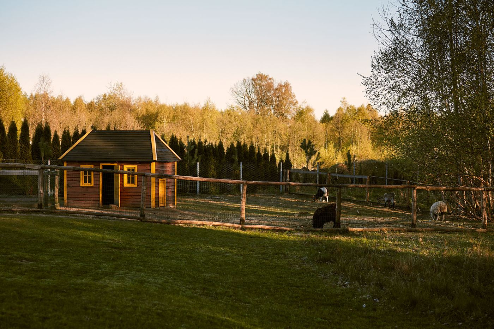
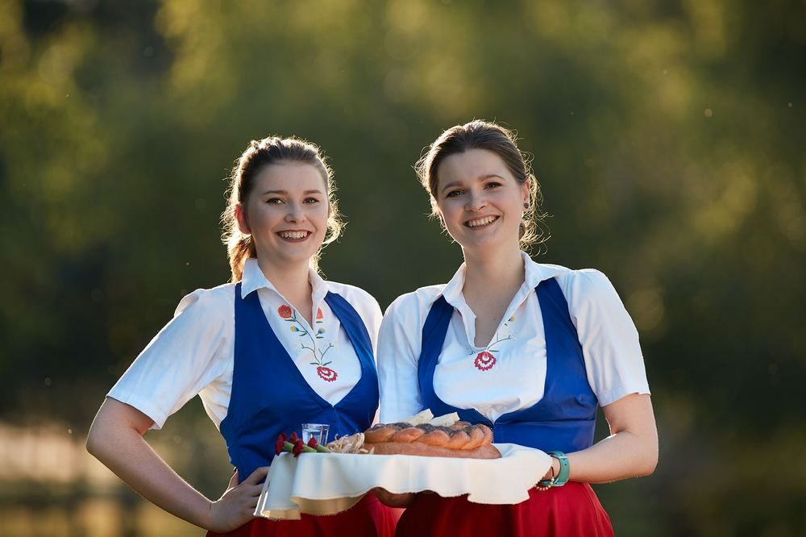
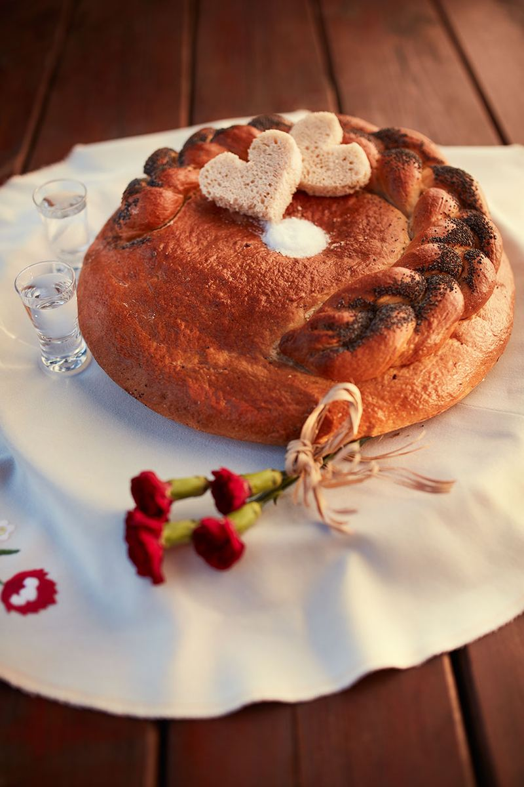
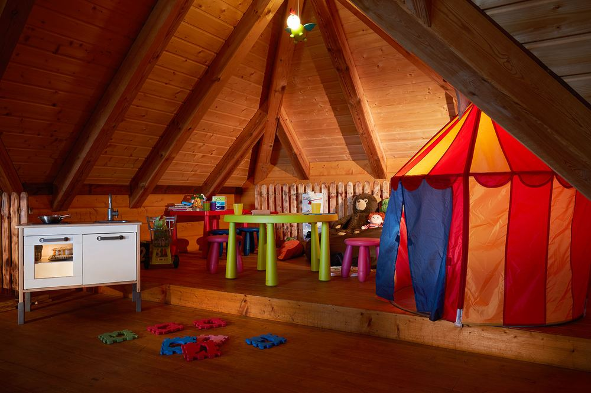
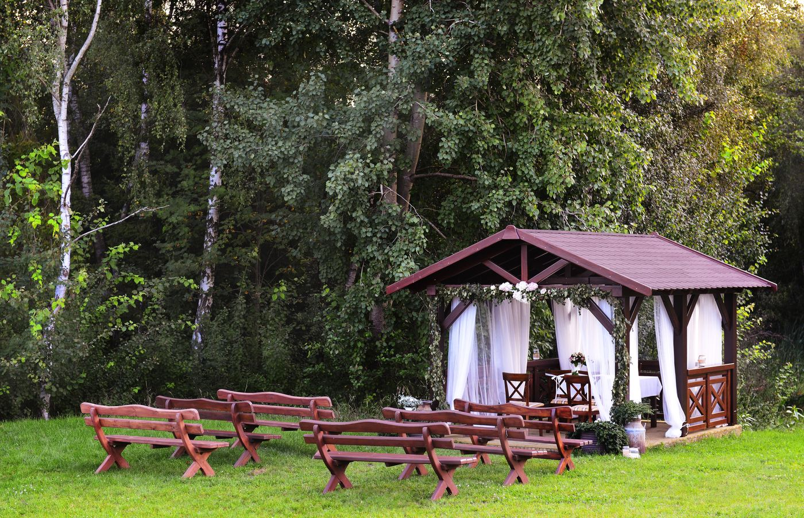
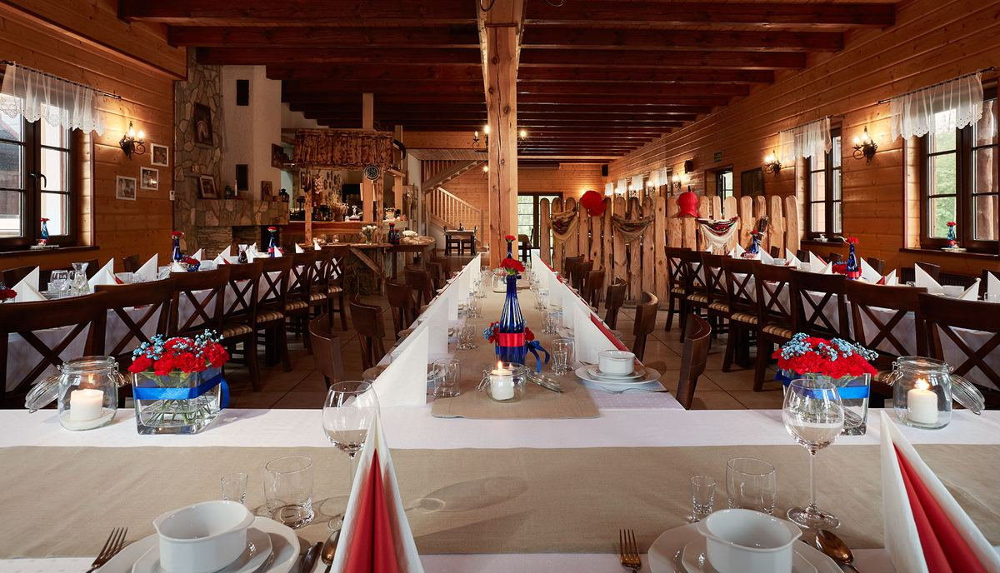
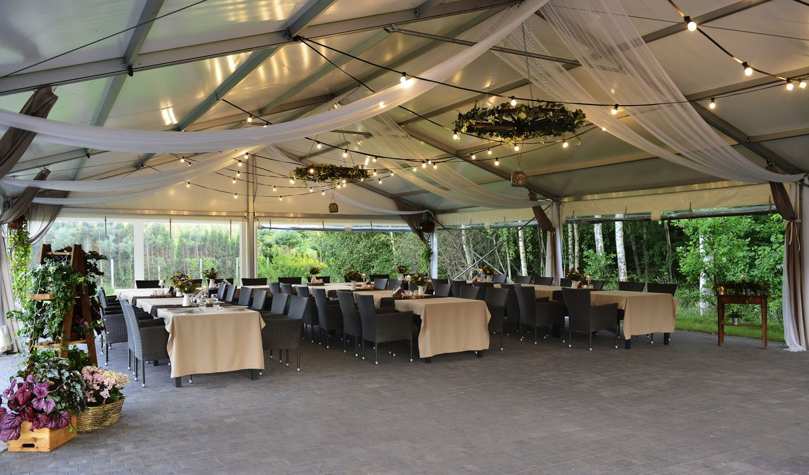
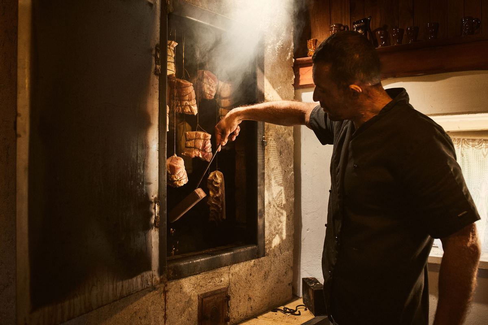
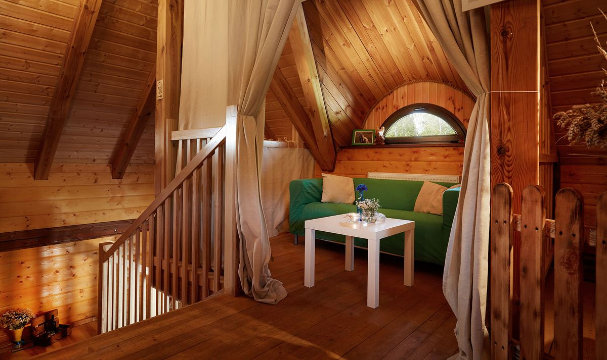

Kuchnia staropolska z własnej wędzarni i piekarni, dwie sale z kominkiem i tarasem, wesela na wyłączność i noclegi po sąsiedzku. Dziewięć kilometrów od centrum Gdańska.
W Otominie, dziewięć kilometrów od centrum Gdańska, wśród lasów, łąk i stawów, nieopodal Jeziora Otomińskiego i stadniny koni, stoi Karczma Swojak. Budynek jest z drewna, a dach kryje strzecha ułożona przez rzemieślników z Kaszub. W środku kamienny bar i kominek, za oknem staw, las i konie na padoku.
Gotujemy po polsku i po swojsku: domowe zupy, soczyste mięsa, pierogi lepione przez nasze gospodynie, ryby z Bałtyku, chleb własnego wypieku, smalec ze skwarkami i wędliny z naszej wędzarni. Do dyspozycji gości oddajemy dwie sale: Kominkową oraz kameralną Pod Strzechą z tarasem widokowym, a dla najmłodszych kącik zabaw i mini zoo.

Weekendowa restauracja: karta obiadowa w sobotę i niedzielę, dla grup zorganizowanych w dowolnym terminie. Poniżej wybrane pozycje z karty.
Pełna karta menu i lista alergenów w restauracji. Ceny z obecnej strony swojak.com, do aktualizacji przed publikacją.

Obsługa w strojach kaszubskich, staropolska gościnność i chleb prosto z naszego pieca.

Szarlotka, sernik na czekoladowym spodzie i ciasto Gospodyni. Pieczemy u siebie.

Dzieci mają swój kącik w sali, a na zewnątrz plac zabaw i mini zoo.
Wesela organizujemy cały rok, w dowolny dzień tygodnia. Od poniedziałku do piątku oraz od listopada do kwietnia w cenach ustalanych indywidualnie.

menu od 380 zł za osobę

menu biesiadne od 350 zł za osobę

nowa usługa, wycena indywidualna

Ciepłe wspomnienie babcinej kuchni na wsi. Postawiliśmy piec z cegły szamotowej w chatce krytej gontem i wędzimy tak, jak kiedyś.
Mięsa i kiełbasy z czosnkiem przygotowane w solance, doprawione ziołami, wędzą się powoli w dymie z aromatycznego drewna. Potem wiszą na stojaku w karczmie, cieszą oko i trafiają na deskę mięs przy każdej biesiadzie. Obok wędzarni piec chlebowy, z którego wychodzi nasz chleb; do niego prawdziwy smalec ze skwarkami.
Zapytaj o wędliny na zamówienieAgroturystyka Swojak, 150 metrów od restauracji, na tej samej posesji w swojskim klimacie.
Pokoje dwuosobowe i wieloosobowe, razem 27 miejsc noclegowych z możliwością dostawek dla dzieci, w domkach Gołębim i Kanarkowym oraz w apartamencie nowożeńców. W każdym domku w pełni wyposażona kuchnia. Goście wesel i uroczystości nocują w cenach promocyjnych.
Tuż obok działa Stajnia Swojak: szkółka jeździecka, przejażdżki bryczką i konie na padoku, które widać z okien karczmy.

Sale, taras, ogród, altana i zwierzęta. Zdjęcia w wersji finalnej w pełnej rozdzielczości, z powiększaniem na telefonie.
W wersji finalnej w tym miejscu pobierają się automatycznie opinie z wizytówki Google Karczmy Swojak. Poniżej przykład układu.
„Przykładowa opinia z Google. Tu pojawi się prawdziwa treść po podpięciu wizytówki.”
Gość z Google · przykład„Przykładowa opinia z Google. Tu pojawi się prawdziwa treść po podpięciu wizytówki.”
Gość z Google · przykład„Przykładowa opinia z Google. Tu pojawi się prawdziwa treść po podpięciu wizytówki.”
Gość z Google · przykład502 281 820
Tomasz Zalewski, właściciel
Karczma Swojak
ul. Konna 6, 80-174 Otomin
9 km od centrum Gdańska, 3 km od obwodnicy Trójmiasta
{kind=link}
{kind=link}
{kind=link}
{kind=link}
{kind=link}
{kind=link}
{kind=link}
{kind=link}
{kind=link}
{kind=link}
{kind=link}
{kind=link}